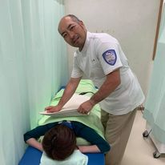
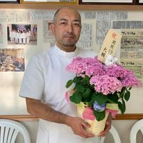

01 / 05
施設概要
地域に根ざした
接骨院という医療施設。
まるや接骨院は、山梨県富士吉田市にある接骨院(柔道整復師による施術施設)です。捻挫・打撲・骨折・脱臼などのケガから、スポーツ外傷、交通事故によるケガ、産後のお身体のケアまで、地域のみなさまの身体のお悩みに向き合っています。
施設名
まるや接骨院
所在地
山梨県富士吉田市
電話番号
0555-24-6793
当院は医師が常駐する「病院」ではなく、柔道整復師による「接骨院」です。施術内容により健康保険の適用範囲が異なりますので、詳しくはお電話でご確認ください。
02 / 05
診療科目
施術メニュー
お身体の状態やご希望に合わせて、以下の施術をご用意しています。
01
捻挫・打撲・筋損傷(肉離れ)・骨折・脱臼
スポーツ選手の方も多く通院。症状に合わせた丁寧な施術で早期の回復をサポート。
02
交通事故によるケガ
各種保険取り扱い・交通事故保険取扱店。むちうちなどのお悩みにも対応。
03
酸素カプセル
疲労回復酸素カプセルで、高気圧・高濃度酸素による回復をサポート。
04
産後ケア
開業以来、助産師監修のもと産後ケアを実施しています。
横にスクロールしてご覧いただけます

03 / 05
医師・施術者紹介
院長紹介
院長・柔道整復師
渡辺 将
一人ひとりのお身体の状態とお悩みに向き合い、丁寧な問診と施術を心がけています。「痛みを我慢せず、まずは気軽にご相談ください」をモットーに、地域のみなさまに寄り添う接骨院を目指しています。
04 / 05
患者向けサービス
患者さまへのサポート
疲労回復酸素カプセル
高気圧・高濃度酸素で回復と疲労軽減をサポート。
助産師監修 産後ケア
出産を終えたお母様のお身体に寄り添う施術。
各種保険取り扱い
健康保険・交通事故保険など各種保険に対応。
お電話でのご予約
0555-24-6793